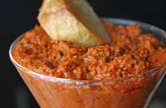

Romesco Casero

Mi romesco
El romesco es una salsa a base de Morron de origen Espaniol, espero que esta receta modificada les guste
Ingredientes
- 4 morrones asados
- Buena cantidad de parmesano
- almendras y nueces rostizadas y ya cortadas
- 2 ajos rayados
- cilantro perejil menta(frescos) sal ,pimenton y pimienta
- bastante manteca
- jugo de limon y su rayadura
- aceite de oliva
Pasos
- En un bowl poner los morrones, el parmesano los ajos la manteca y el limon
- En otro bowl poner los las hierbas con la sal, el pimenton y la pimienta junto a los frutos secos
- En una procesadora procesar el Primer Bowl
- Una vez que los ingredientes esten unidos agregar el Segundo Bowl
- Emulsionar levemente con el aceite de oliva hasta conseguir consistencia deseada (cremosa)
- Chequear sal y Pum, listo!